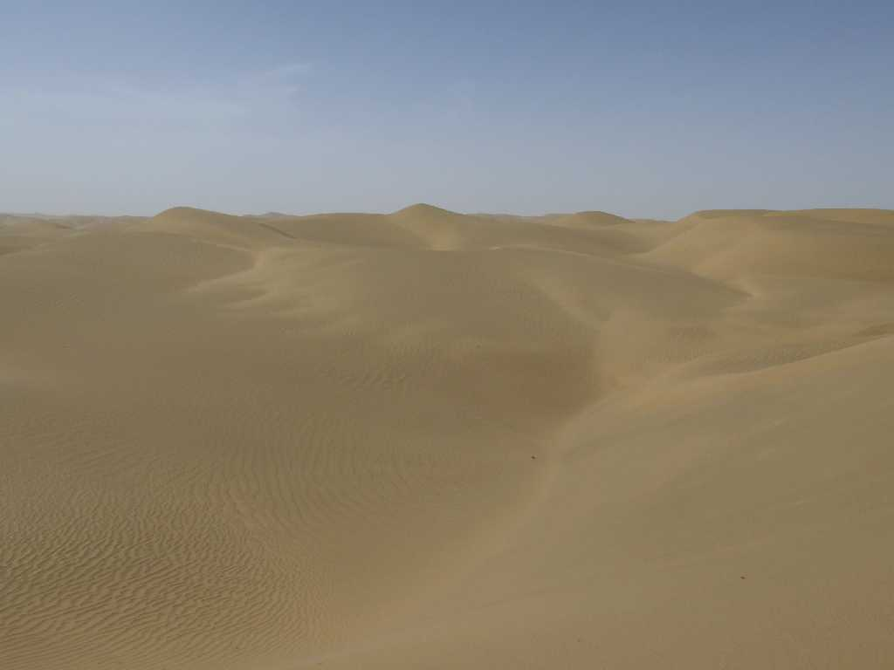
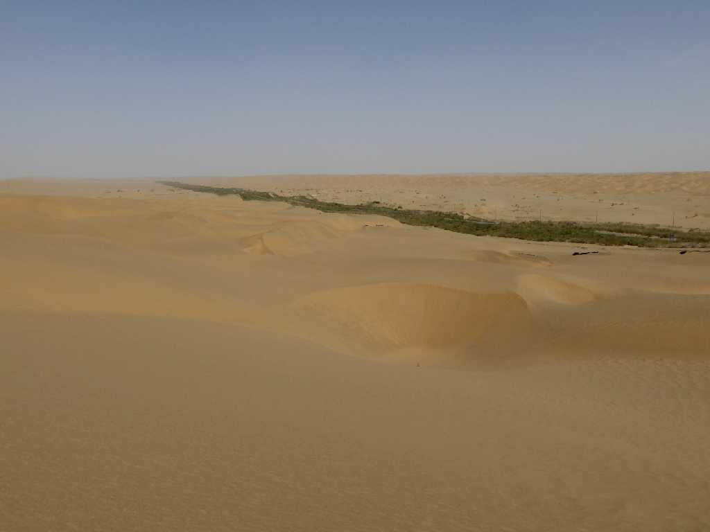
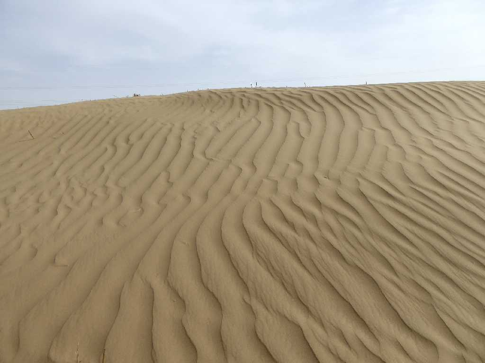
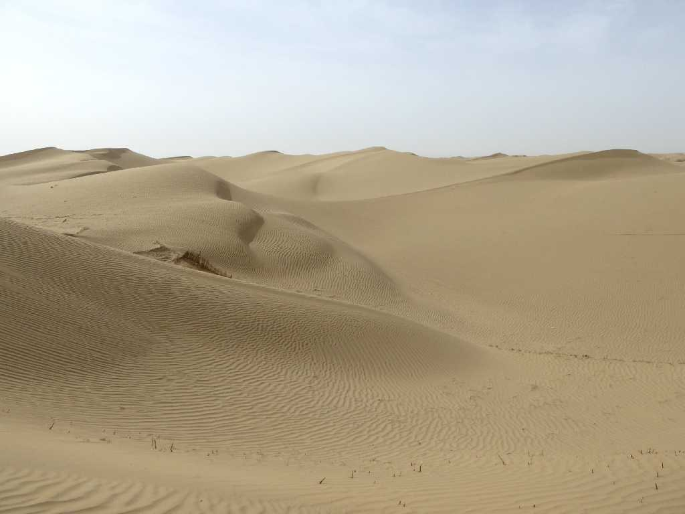
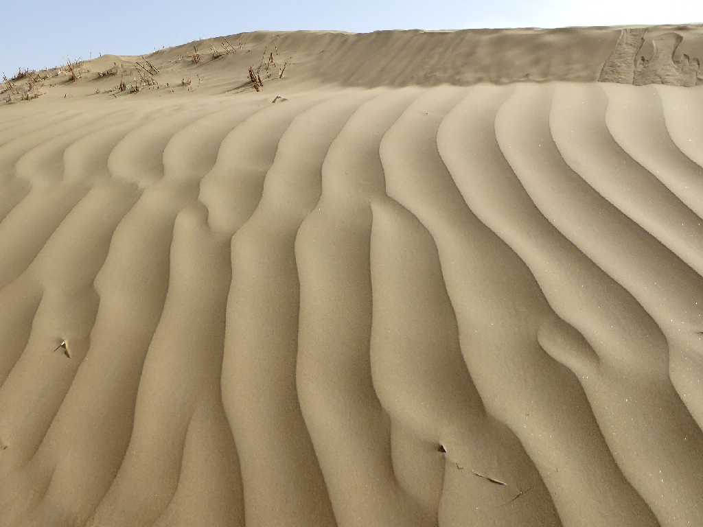
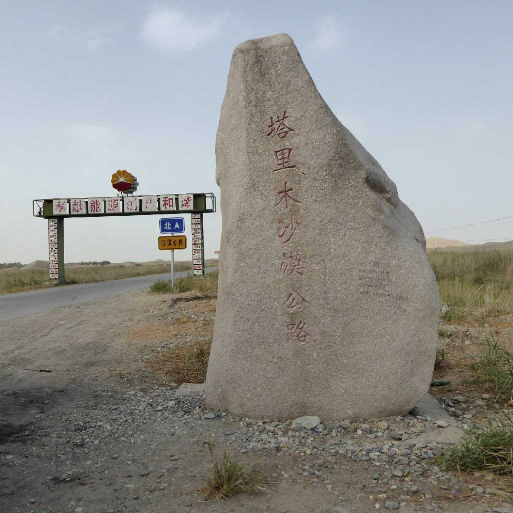

Taklamakan Desert Qarqan Xinjiang 新疆 且末 塔克拉玛干沙漠
タクラマカンはウィグル語で死を意味するタッキリと無限を意味するマカンの合成語と云われ３３万7千ｋ㎡と日本国土面積の９割程の広大な砂漠である

Tarim Desert Highway Taklamakan Desert 塔克拉玛干沙漠 塔里木沙漠公路
タリム砂漠公路は砂漠北部のクチャから南部のニヤに至る全長５６６ｋｍのタクラマカン砂漠縦断道路で両側は砂に埋もれるのを防ぐため植林されている

Wind ripples Taklamakan Desert 塔克拉玛干沙漠 沙漠风涟漪
September 17 2015 Tarim Desert Highway 塔里木沙漠公路 塔中
タクラマカン砂漠のほぼ中央に位置する塔中では石油が多く産出される

Taklamakan Desert 塔克拉玛干沙漠

Wind ripples Taklamakan Desert 塔克拉玛干沙漠 沙漠风涟漪

Exit Tarim Desert Highway Taklamakan Desert Niya 民丰 塔克拉玛干沙漠 塔里木沙漠公路